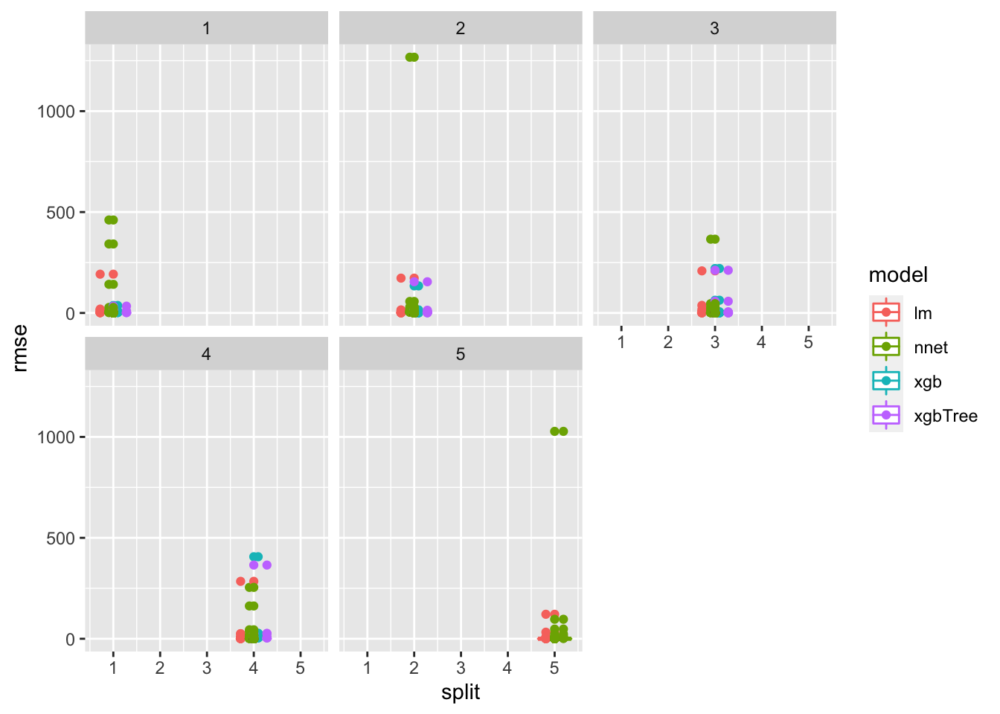
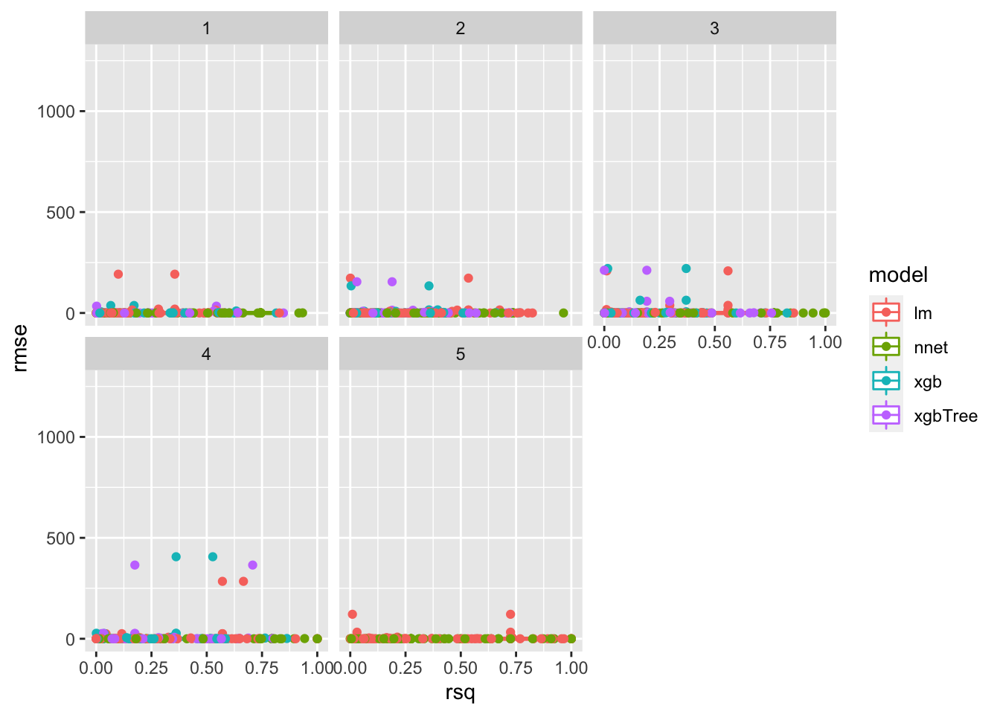
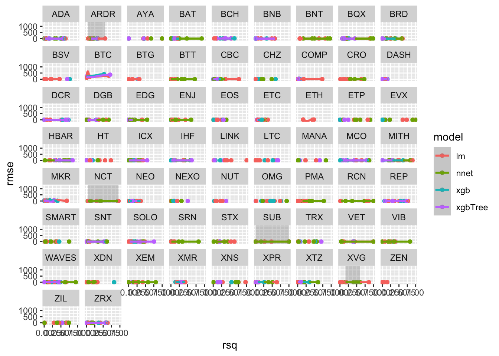

Section - 7 Evaluate Model Performance
7.1 Summarizing models
Example for one model:
postResample(pred = cryptodata_nested$lm_test_predictions[[1]], obs = cryptodata_nested$test_data[[1]]$target_price_24h)## RMSE Rsquared MAE
## 0.26623213 0.06720338 0.22187632We can extract the first element to return the RMSE metric, and the second element for the R Squared (R^2) metric:
print(paste('Now showing RMSE example:', postResample(pred = cryptodata_nested$lm_test_predictions[[1]], obs = cryptodata_nested$test_data[[1]]$target_price_24h)[[1]]))## [1] "Now showing RMSE example: 0.26623212960886"print(paste('Now showing R Squared example:', postResample(pred = cryptodata_nested$lm_test_predictions[[1]], obs = cryptodata_nested$test_data[[1]]$target_price_24h)[[2]]))## [1] "Now showing R Squared example: 0.0672033813110073"7.1.1 Adjust RMSE
[TODO - NEED TO MAKE SURE RMSE IS STANDARDIZED HERE!]
Because cryptocurrencies can vary dramatically in their prices with some trading in the tens of thousands of dollars and others trading for less than a cent, we need to make sure to standardize the RMSE columns to provide a fair comparison for the metric.
Therefore, before using the postResample() function, let’s convert both the predictions and the target to be the % change in price over the 24 hour period, rather than the change in price ($).
7.1.1.1 Predictions Adjustment
First we will adjust the predictions to instead of being predictions for the price in dollars, will be % change relative to the previous price.
calculate_percent_change_preds <- function(train, test_predictions){
((lag(tail(train,1)$price_usd, 1) - tail(train,1)$price_usd) / abs(tail(train,1)$price_usd))*100
}Overwrite the old predictions with the predictions adjusted as a percentage now:
First create a new column with the last price from the the train data:
# add hereThen use that to calculate the first % change, then can calculate the rest for test set by doing ((lag(price, 1) - price / abs(price))*100… KEEP GOING
7.1.1.2 Actual Results Adjustment
Now do the same thing to the target variable before we calculate the error metrics:
calculate_percent_change_actual <- function(train, test_predictions){
((lag(tail(train,1)$price_usd, 1) - tail(train,1)$price_usd) / abs(tail(train,1)$price_usd))*100
}Overwrite the old predictions with the predictions adjusted as a
7.1.2 Calculate RMSE
Now make a function to get the RMSE metric for all models:
evaluate_preds_rmse <- function(predictions, test_data){
postResample(pred = predictions, obs = test_data$target_price_24h)[[1]]
}Now we can use map2() to use it to get the RMSE metric for both the test data and the holdout:
cryptodata_nested <- mutate(cryptodata_nested,
lm_rmse = unlist(ifelse(split < 5,
map2(lm_test_predictions, test_data, evaluate_preds_rmse),
map2(lm_holdout_predictions, holdout_data, evaluate_preds_rmse))))Look at the results:
select(cryptodata_nested, lm_rmse)## [90m# A tibble: 325 x 3[39m
## [90m# Groups: symbol, split [325][39m
## symbol split lm_rmse
## [3m[90m<chr>[39m[23m [3m[90m<dbl>[39m[23m [3m[90m<dbl>[39m[23m
## [90m 1[39m XTZ 1 0.266
## [90m 2[39m BCH 1 14.3
## [90m 3[39m BNB 1 0.614
## [90m 4[39m ETC 1 0.183
## [90m 5[39m NEO 1 0.573
## [90m 6[39m STX 1 0.002[4m0[24m[4m7[24m
## [90m 7[39m BTG 1 0.252
## [90m 8[39m LINK 1 0.723
## [90m 9[39m VET 1 0.000[4m4[24m[4m5[24m[4m8[24m
## [90m10[39m IHF 1 0.004[4m5[24m[4m3[24m
## [90m# … with 315 more rows[39m7.1.3 Calculate R^2
Now we can do the same for the R Squared metric:
evaluate_preds_rsq <- function(predictions, test_data){
postResample(pred = predictions, obs = test_data$target_price_24h)[[2]]
}cryptodata_nested <- mutate(cryptodata_nested,
lm_rsq = unlist(ifelse(split < 5,
map2(lm_test_predictions, test_data, evaluate_preds_rsq),
map2(lm_holdout_predictions, holdout_data, evaluate_preds_rsq))))And now we can do the same for all the other models
cryptodata_nested <- mutate(cryptodata_nested,
# XGBoost - RMSE
xgb_rmse = unlist(ifelse(split < 5,
map2(xgb_test_predictions, test_data, evaluate_preds_rmse),
map2(xgb_holdout_predictions, holdout_data,evaluate_preds_rmse))),
# XGBoost - R^2
xgb_rsq = unlist(ifelse(split < 5,
map2(xgb_test_predictions, test_data, evaluate_preds_rsq),
map2(xgb_holdout_predictions, holdout_data, evaluate_preds_rsq))),
# XGBoost Trees - RMSE
xgbTree_rmse = unlist(ifelse(split < 5,
map2(xgbTree_test_predictions, test_data, evaluate_preds_rmse),
map2(xgbTree_holdout_predictions, holdout_data, evaluate_preds_rmse))),
# XGBoost Trees - R^2
xgbTree_rsq = unlist(ifelse(split < 5,
map2(xgbTree_test_predictions, test_data, evaluate_preds_rsq),
map2(xgbTree_holdout_predictions, holdout_data, evaluate_preds_rsq))),
# Neural Network - RMSE
nnet_rmse = unlist(ifelse(split < 5,
map2(nnet_test_predictions, test_data, evaluate_preds_rmse),
map2(nnet_holdout_predictions, holdout_data, evaluate_preds_rmse))),
# Neural Network - R^2
nnet_rsq = unlist(ifelse(split < 5,
map2(nnet_test_predictions, test_data, evaluate_preds_rsq),
map2(nnet_holdout_predictions, holdout_data, evaluate_preds_rsq))))Now we have RMSE values for every model created for every cryptocurrency and split of the data:
rmse_scores <- select(cryptodata_nested, lm_rmse, xgb_rmse, xgbTree_rmse, nnet_rmse)
# Show RMSE scores
rmse_scores## [90m# A tibble: 325 x 6[39m
## [90m# Groups: symbol, split [325][39m
## symbol split lm_rmse xgb_rmse xgbTree_rmse nnet_rmse
## [3m[90m<chr>[39m[23m [3m[90m<dbl>[39m[23m [3m[90m<dbl>[39m[23m [3m[90m<dbl>[39m[23m [3m[90m<dbl>[39m[23m [3m[90m<dbl>[39m[23m
## [90m 1[39m XTZ 1 0.266 0.315 0.444 0.542
## [90m 2[39m BCH 1 14.3 10.6 10.4 17.4
## [90m 3[39m BNB 1 0.614 0.583 0.611 0.385
## [90m 4[39m ETC 1 0.183 0.148 0.168 0.293
## [90m 5[39m NEO 1 0.573 0.406 0.438 1.66
## [90m 6[39m STX 1 0.002[4m0[24m[4m7[24m [31mNA[39m [31mNA[39m 0.005[4m3[24m[4m2[24m
## [90m 7[39m BTG 1 0.252 [31mNA[39m [31mNA[39m 0.194
## [90m 8[39m LINK 1 0.723 0.963 0.840 1.07
## [90m 9[39m VET 1 0.000[4m4[24m[4m5[24m[4m8[24m [31mNA[39m [31mNA[39m 0.001[4m9[24m[4m0[24m
## [90m10[39m IHF 1 0.004[4m5[24m[4m3[24m 0.004[4m4[24m[4m3[24m 0.004[4m8[24m[4m1[24m 0.003[4m1[24m[4m8[24m
## [90m# … with 315 more rows[39mAnd the R Squared values:
rsq_scores <- select(cryptodata_nested, lm_rsq, xgb_rsq, xgbTree_rsq, nnet_rsq)
# Show R^2 scores
rsq_scores## [90m# A tibble: 325 x 6[39m
## [90m# Groups: symbol, split [325][39m
## symbol split lm_rsq xgb_rsq xgbTree_rsq nnet_rsq
## [3m[90m<chr>[39m[23m [3m[90m<dbl>[39m[23m [3m[90m<dbl>[39m[23m [3m[90m<dbl>[39m[23m [3m[90m<dbl>[39m[23m [3m[90m<dbl>[39m[23m
## [90m 1[39m XTZ 1 0.067[4m2[24m 0.003[4m5[24m[4m2[24m 0.121 0.127
## [90m 2[39m BCH 1 0.541 0.602 0.519 [31mNA[39m
## [90m 3[39m BNB 1 0.488 0.376 0.331 [31mNA[39m
## [90m 4[39m ETC 1 0.059[4m4[24m 0.058[4m7[24m 0.070[4m9[24m [31mNA[39m
## [90m 5[39m NEO 1 0.147 0.355 0.397 [31mNA[39m
## [90m 6[39m STX 1 0.122 0.135 0.119 0.003[4m7[24m[4m2[24m
## [90m 7[39m BTG 1 0.004[4m5[24m[4m1[24m 0.015[4m2[24m 0.005[4m2[24m[4m6[24m [31mNA[39m
## [90m 8[39m LINK 1 0.018[4m4[24m 0.158 0.040[4m5[24m [31mNA[39m
## [90m 9[39m VET 1 0.114 0.163 0.185 0.303
## [90m10[39m IHF 1 0.089[4m4[24m 0.134 0.059[4m7[24m 0.679
## [90m# … with 315 more rows[39m7.1.4 New Section
Now for each model we will create a new column giving the average RMSE and R^2 for the 4 cross-validation split, and a separate column to give the score for the holdout.
rmse_scores <- mutate(cryptodata_nested,
lm = mean(lm_rmse, na.rm = T),
xgb = mean(xgb_rmse, na.rm = T),
xgbTree = mean(xgbTree_rmse, na.rm = T),
nnet = mean(nnet_rmse, na.rm = T))Now we can use the gather() function to summarize the columns as rows:
rmse_scores <- unique(gather(select(rmse_scores, lm:nnet), 'model', 'rmse', c(-symbol,-split)))Now the same for the R^2
rsq_scores <- mutate(cryptodata_nested,
lm = mean(lm_rsq, na.rm = T),
xgb = mean(xgb_rsq, na.rm = T),
xgbTree = mean(xgbTree_rsq, na.rm = T),
nnet = mean(nnet_rsq, na.rm = T))Now we can use the gather() function to summarize the columns as rows:
rsq_scores <- unique(gather(select(rsq_scores, lm:nnet), 'model', 'rsq', c(-symbol,-split)))7.2 Visualize Results
7.2.1 RMSE Visualization
Now we can take the same tools we learned in the Visualization section from earlier and visualize the results of the models.
ggplot(rmse_scores, aes(x=split, y=rmse, color = model)) +
geom_boxplot() +
geom_point() +
facet_wrap(~split)
7.2.2 Both
7.2.2.1 Join Datasets
First join the two
plot_scores <- merge(rmse_scores, rsq_scores)7.2.2.2 Plot Results
ggplot(plot_scores, aes(x=rsq, y=rmse, color = model)) +
geom_point() +
geom_smooth()
ggplot(plot_scores, aes(x=rsq, y=rmse, color = model)) +
geom_boxplot() +
geom_point() +
facet_wrap(~split)
Now by the cryptocurrency
ggplot(plot_scores, aes(x=rsq, y=rmse, color = model)) +
geom_point() +
geom_smooth() +
facet_wrap(~symbol)
7.2.3 Results by the Cryptocurrency
knitr::include_app('https://predictcrypto.shinyapps.io/tutorial_latest_model_summary/', height = '600px')The app shown above also has a button to Show Code. If you were to copy and paste that code into an RStudio session on your computer into a file with the .Rmd file extension and you then Knit the file, the same exact app should show up on your computer, no logins or setup outside of the packages required for the code to run; RStudio should automatically prompt you to install packages that are not currently installed on your computer.
[TODO - HERE ALSO REMEMBER TO LOG MLFLOW METRICS AND WRITE THE SAME INFO TO THE DB]